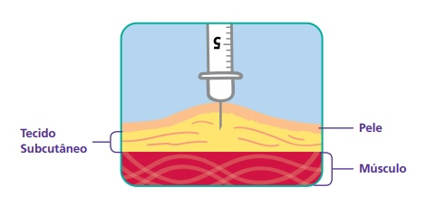

Diabetes infantil: conheça a doença autoimune que mais acomete crianças.
Sim, você leu certo. Há muito tempo doenças como hipertensão, diabetes, artrose, deixaram de ser "doença de velho" e passaram a ser muito comuns na infância e adolescência.

A mais comum entre as crianças é a Diabetes Mellitus tipo 1, que ocorre quando as células do pâncreas são destruídas e ele passa a não conseguir produzir, ou produzir em pouca quantidade, a insulina necessária. Assim, os níveis de açúcar (glicose) no sangue se elevam, gerando uma série de sintomas.
- Aumento da fome e sede
- Visão embaçada
- Fraqueza e indisposição para fazer coisas básicas
- Predisposição a doenças renais, AVC, perda de visão e ataque cardíaco.
Entre eles estão:
Como tratar
Devido a deficiência de glicose no sangue, a criança com diabetes ficará dependente das injeções de insulina, é excepcional no tratamento, e deve ser prescrito assim que sair o diagnóstico. É uma injeção subcutânea, que é aplicada na divisão entre pele e músculo, o que chamamos de tecido subcutâneo.
Os locais recomendados para aplicação são abdômen, braços, nádegas e coxas.
Além disso, precisará ter uma dieta bem equilibrada, com a quantidade certa de nutrientes para não aumentar o índice glicêmico.
A taxa de açúcar deve ser monitorada várias vezes ao dia, principalmente ao fazer um exercício físico, antes e após, para prevenir uma possível hipoglicemia, que acontece quando a taxa de açúcar baixa.
Fontes:
Diabetes infantil - Especialidades PediátricasDiabetes mellitus (DM)